以前、テニスゲームがArduino 単体でVGA 出力して遊んでいるビデオをYouTubeで見ました。
8月23日には、二人用でコードを修正したビデオがアップされているようです。Roberto Melzi さんがブログに遊びに来てくれて、新しいコードとビデオをアップしたよって教えてくれました。arduino フォーラムはこちら
ありがとう、Roberto さん
[youtube https://www.youtube.com/watch?v=hVzA3x4EiT4]
これは、もう作らずにはいられませんよね。早速、コントローラー作りの材料を物色している最中です。
作者の作り方を真似てみることに。ビデオのスクリーンショットからどんな材料が必要か検討します。
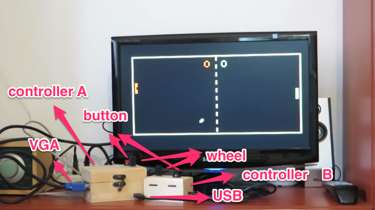
木箱を利用しているようです。
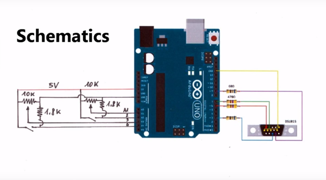
全体の配線はこのようになっているそうです。
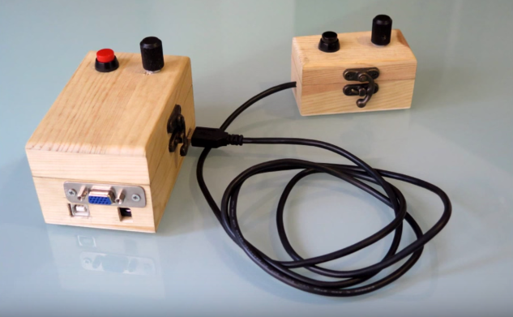
コントローラー同士は、USB ケーブルを利用しているようです。
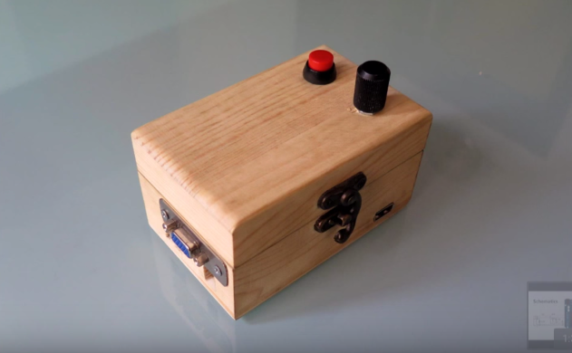
コントローラーAには、Arduino Uno 本体が収められています。
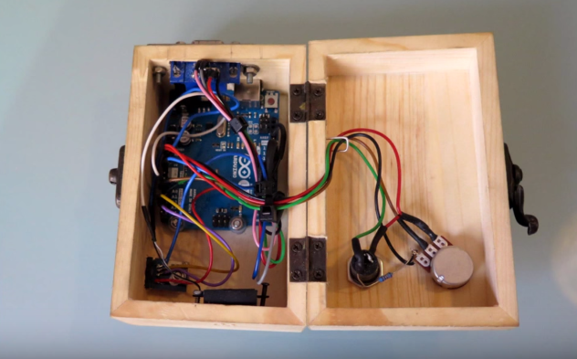
ロータリー式の抵抗とボタンがあればできそうです。
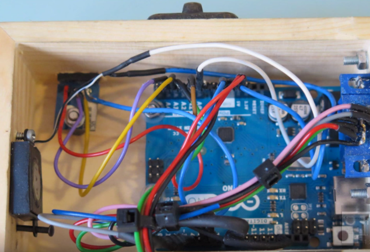
スピーカはコントローラーAの親機側についているようです。
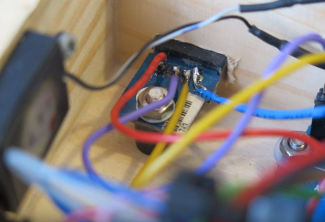
コントローラBとの結線は４線です。
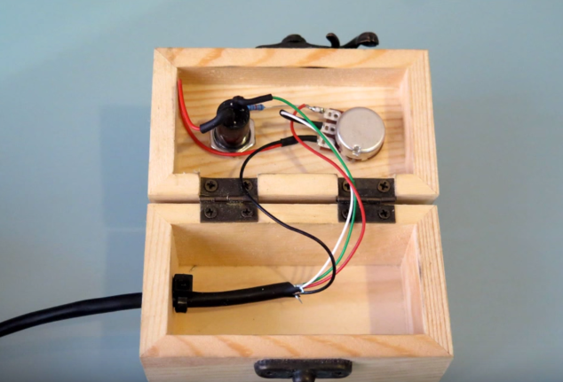
なるほど、参考になりました。
必要なパーツ
1) ロータリー式のポテンションメータ とつまみ ・・・・ x 2個
2) ボタン ・・・・・・・・・・・・・・・・ x 2個
3) コントローラ A と B を結線する 4芯ケーブル＆ソケット ・・・1 ～ 2 M 程度
4) 抵抗 1.8K 程度 ・・・・・・・・・・・・ x 2個
5) 収める箱 ・・・・・・・・・・・・・・・ x 2個
6) スピーカ ・・・・・・・・・・・・・・ x 1個———————————————————
7) VGA メスコネクター ・・・・・・・・・ x 1個
8) 抵抗 68オーム ・・・・・・・・・・・・・ x 2個
9) 抵抗 470オーム ・・・・・・・・・・・・ x 2個
10) Arduino 本体 ・・・・・・・・・・・・ x 1個
とりあえず、１～6あたりの材料を物色。最近は、ロータリー式の抵抗は使わないのであるかどうか？
7～10は、前回のを流用、本体は、Arduino Nano 互換機を使い小型化してみます。5V 電源も内蔵させて、親機とコントローラA ＋ B に分離したほうが遊ぶ時、ポジションの自由度があがりそうです。
・
・
・
・
・
材料物色中
・
・
・
・
・
ジャンク箱から、素材を取り出しました。
ピンク矢印のパーツを使う予定。目玉おやじは頭を押すとスイッチになっていてしゃべります。マクドナルドのおまけのやつです。その横の丸い蓋があるのは携帯灰皿で蓋を開くとLED が点灯していたのでスイッチになるかと。
ラケットは本体ケースにしてpong っぽい雰囲気を出そうかという狙い。電源ユニットは、リチウム＋充電ユニットに100円ショップの５V昇圧ユニットを利用。これをラケット形の本体に入れようかという狙い。本体（ラケット）＋コントローラA（目玉おやじ） ＋ B（携帯灰皿） という構成になります。
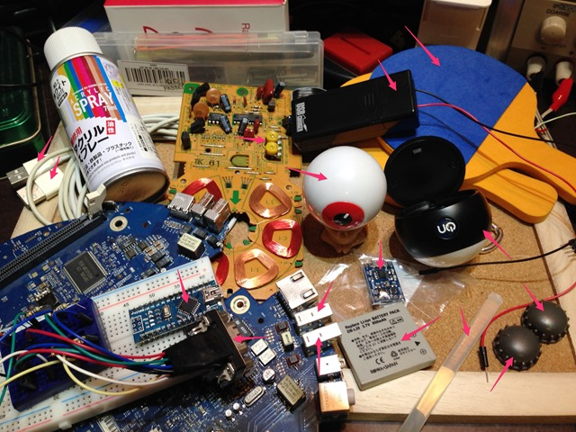
可変抵抗のジャンクがありませんでした。見つかったのは、半固定抵抗の以下。かなりレア品な昔のレコードプレーヤーの基盤です。1980年代くらいじゃないかと。20年から30年前の基盤のパーツはまだ大きくて使いやすいです。
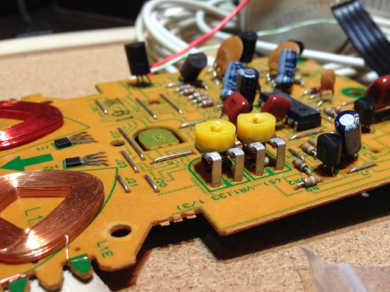
この半固定抵抗にグルースティックをつけて、以下のつまみを付ければホイールコントローラになりそう。このつまみは何のか忘れましたが、２つ転がっていたのでちょうどいいやと思いまして。
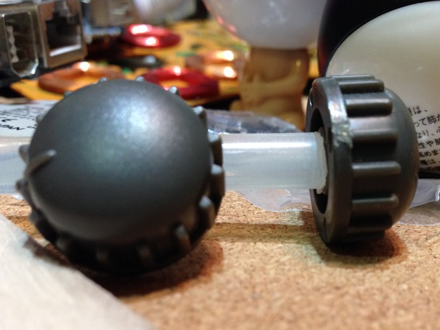
USB のメスジャックはiMac のジャンクマザーボードから引っこ抜きます。
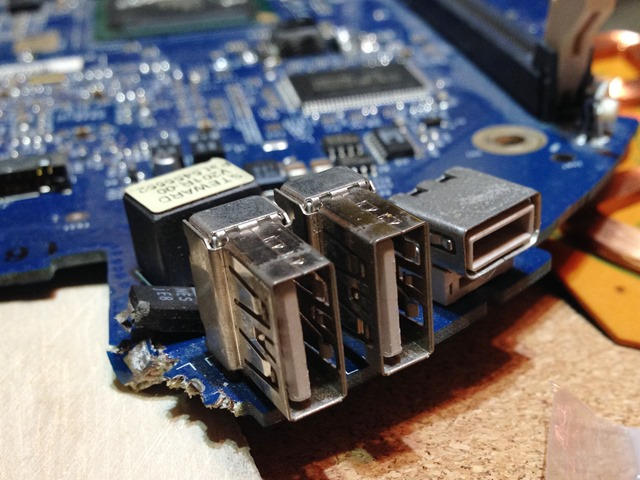
ケースとコントローラのにするものを迷っていたのですが、しっくり来そうなものが見つかったので工作に入ろうかと。ああでもないこうでもないと、考えながら素材集めに半日かかりました。こういうところがジャンク工作の楽しさです。
まずパーツを取り外しにかかります。長くなったので、次回工程にて紹介します。